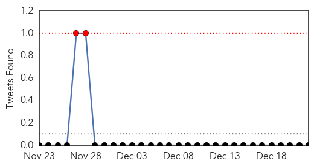
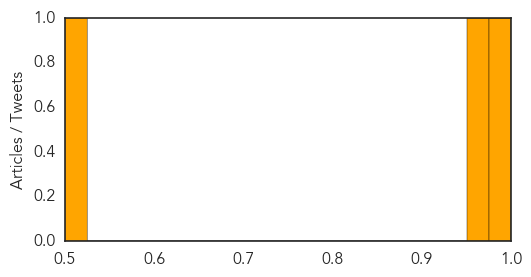
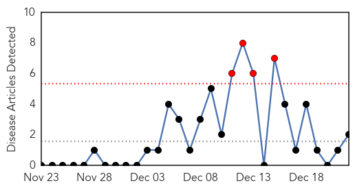
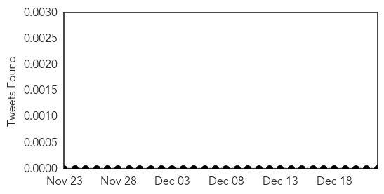
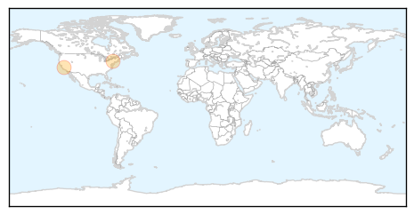
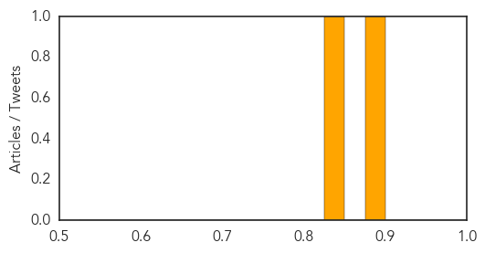

Dengue Fever
30-Day Web Trend
0 alerts, 0 warnings

30-Day Twitter Trend
2 alerts, 0 warnings

Article Locations

Article Confidences
Top Articles:
Top Tweets:
- 0.529
- Flavivirus news: One new case of dengue fever confirmed in Hong Kong - BioPrepWatch: BioPrepWat... http://t.co/SYeaoIZhNm pathogenposse
Pertussis
30-Day Web Trend
4 alerts, 0 warnings

30-Day Twitter Trend
0 alerts, 0 warnings

Article Locations
Article Confidences
Top Articles:
Top Tweets:
-
No tweets found for Dec 22, 2014